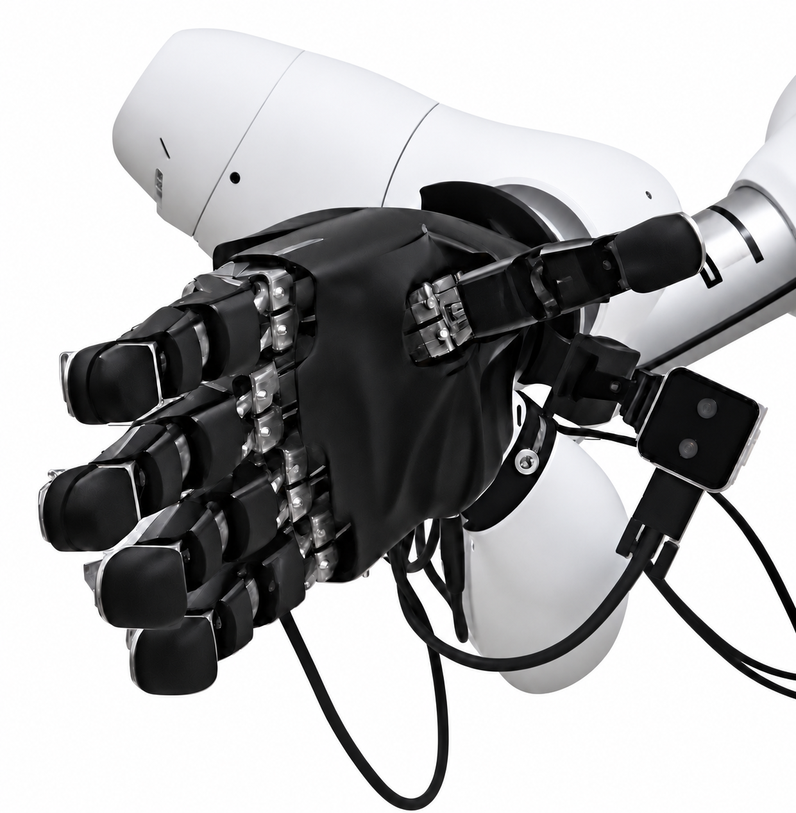

FINGERTIP TACTILE SENSOR
Three-Axis Fingertip
Tactile Sensor
Research on a three-axis tactile sensor for integration into robotic hands.
Sensor fabrication · Calibration · Robotic-hand experimentsExplore projectTactile sensing of contact force and position.
From sensor and circuit design
to robotic-hand and gripper experiments.

AIDIN-HAND / FINGERTIP TACTILE SENSORExplore fingertip and gripper tactile sensors, wearable gloves, and palm sensor design.
Research on a three-axis tactile sensor for integration into robotic hands.
Sensor fabrication · Calibration · Robotic-hand experimentsExplore projectResearch on a three-axis tactile sensor for integration into robotic grippers.
Hardware fabrication · Three-axis loading · Gripper integrationExplore project 02 / RESEARCH ARCHIVE
02 / RESEARCH ARCHIVEResearch on object-size and grasp-force estimation with a wearable robotic glove.
Measurement hardware · Actuator control · Physical experimentsExplore project 03 / RESEARCH ARCHIVE
03 / RESEARCH ARCHIVEResearch on a three-axis palm tactile sensor design using fringing fields.
Capacitance simulation · Electrode and hardware designExplore project 04 / SIMULATION & CAD
04 / SIMULATION & CADSensor design → Fabrication → Reference measurements → Robot integration.
Study how contact loads reach the sensor and compare electrode layouts through simulation.
Mold silicone, fabricate PCBs and assemble the sensor with measurement, processing and communication circuits.
Compare against a reference sensor and use separate training and evaluation data to assess force and position estimates.
Mount sensors on robotic fingers and grippers and examine their outputs during contact and grasping.
M.S. student
Department of Intelligent Robotics
Sungkyunkwan University
I design tactile sensor structures and electronics to help robots perceive contact. I estimate force and contact position from capacitance signals and evaluate performance against reference sensors.
I have extended the three-axis sensing principle of a compact fingertip sensor to a gripper contact surface and am also simulating palm electrode structures. In wearable robotics research, I developed tension/grasp-force measurement devices and actuator control.
Capacitive Tactile Sensors for Three-Axis Force and Contact-Position Estimation in Robotic Applications